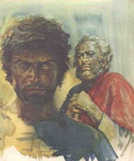
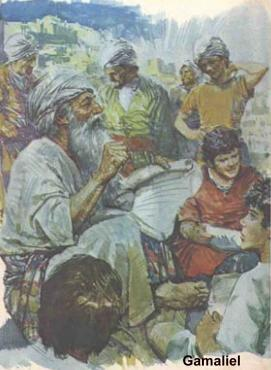
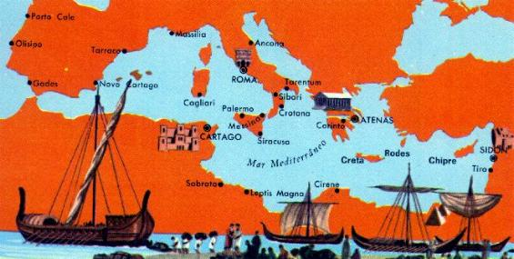

Seus pais eram judeus do ramo benjamita e residiam em Tarso, onde ele nasceu no ano 10 de nossa era. Entre os hebreus, os títulos de fariseu e descendentes de Benjamin outorgavam nobreza religiosa e sanguínea, porque sendo fariseu o cidadão pertencia a classe escolhida de Israel e como benjamita, podia gloriar-se de descender da primeira tribo que seguiu Moisés e com ele por Vontade Divina atravessaram o Mar Vermelho a pé enxuto fugindo dos egípcios.
Sua mãe era uma mulher
dedicada ao trabalho doméstico e preocupada com a educação 
O pai era um homem forte e instruído, legionário do Imperador Augusto, tinha participado de diversas campanhas militares e estava a serviço do grande Império Romano, que ocupava extensa área no Oriente Médio.
Tarso era a capital da Cilícia e se constituía num dos maiores e populosos centros de atividades comerciais nas províncias romanas do Oriente. No seu porto fluvial atracavam grandes embarcações, navios de três continentes, permutando riquezas e movimentando negócios.
Todavia, aquela notável prosperidade comercial e financeira, trouxe uma consequência danosa, porque veio acompanhada pelos vícios e licenciosidades que o paganismo acolhia de braços abertos. As pessoas se entregavam à fartura da mesa e da sexualidade. Como ídolo desta vida epicurista, às portas da cidade erguia-se uma gigantesca estátua de Sardanapalo (que segundo a tradição foi Rei da Assíria no século IX a.C. e viveu no fausto e na devassidão), ostentando uma bandeira rubra com dizeres em letras douradas:
“Viajante! Come, Bebe e Goza, que o resto nada vale!”
Distante dos prazeres, Saulo amparado pelos seus pais dedicava-se ao aprendizado do grego e do hebraico. Contudo, estudar naquela época não era fácil, além de existir poucos professores credenciados por sua boa qualidade profissional, o preço das aulas e do pergaminho era elevado! Então era comum encontrar Saulo estudando sentado numa esteira e sobre as pernas cruzadas, colocava uma tábua e nela, escrevia com um estilete de aço as lições de latim, grego e hebraico.
Também não descuidava da educação religiosa. As sextas-feiras, à noite, o pai devotamente acendia as lâmpadas domésticas com o objetivo de reunir à família e ali rezavam e eram lidos trechos dos livros santos, com a epopéia de seus antepassados.
Com 15 anos de idade, foi para Jerusalém para dar continuidade aos estudos e matriculou-se na Escola de Gamaliel, onde recebeu uma séria instrução religiosa fundamentada nas doutrinas dos fariseus, porque seus pais queriam fazer dele um homem intelectual e um grande Rabi. Jerusalém era o centro universitário do mosaísmo oficial e a Escola de Gamaliel desfrutava de elevado prestígio. Além dela, existia uma outra Escola chamada: Chamai. As duas Escolas se digladiavam verbalmente, com a finalidade de permanecerem em evidência e ganharem a preferência do povo pelos seus ensinamentos e idéias: a de Gamaliel, era a mais antiga e frequentada por mais de mil alunos; a de Chamai embora tivesse menor número de estudantes, era valente, impetuosa e provocava muitos distúrbios. Gamaliel ao contrário, era paciente, bondoso e tolerante, por isso mesmo conseguia a aceitação da maioria.

Na cátedra de cedro, alta e quadrangular, fechada ao redor por uma barra de seda roxa, estava o professor Gamaliel, que só deixava aparecer o seu busto, ostentando uma comprida barba branca que caía sobre a túnica de linho azul, seu traje predileto. Seus olhos irradiavam paz num rosto sereno, levemente risonho. Ensinava como se conversasse ou como se estivesse rezando no lar; jamais corrigia direta e estrepitosamente o erro de um aluno, porque poderia inclusive ocasionar hilaridade nos demais; com sabedoria e discernimento procurava atenuar o erro cometido por um estudante diante da classe, dizendo uma palavra inteligente e de humaníssima tolerância.
As centenas de jovens se assentavam em bancos, colocados em filas e dispostos como num anfiteatro. Sempre que quisessem se dirigir ao Mestre, teriam que levantar a mão em silêncio e esperar sentado o momento de ser autorizado a se manifestar. Quando Gamaliel concedia a palavra a um estudante, ele devia levantar-se e falar. Saulo, precocemente revelou um admirável dom de oratória, assim como, era um intransigente defensor das leis e dos costumes judaicos. E justamente porque procurava manter um comportamento condizente com os pensamentos que defendia, excedia em intolerância, mesmo que ocorressem as mais renhidas discussões. Ele se mantinha encasulado e estribado em suas convicções. Tinha a certeza de que o seu raciocínio é que estava correto e por isso, era antipatizado por muitos colegas. No momento em que o Mestre Gamaliel franqueava a palavra, normalmente ocorriam discussões acirradas entre o fariseu Saulo e um outro estudante, geralmente um simpatizante dos essênios, ou dos saduceus, ou ainda de um jovem nazareno (a doutrina de JESUS se espalhou com admirável rapidez). Houve até cenas de agressões, que o Mestre teve que intervir com energia para debelar os acontecimentos desagradáveis.
